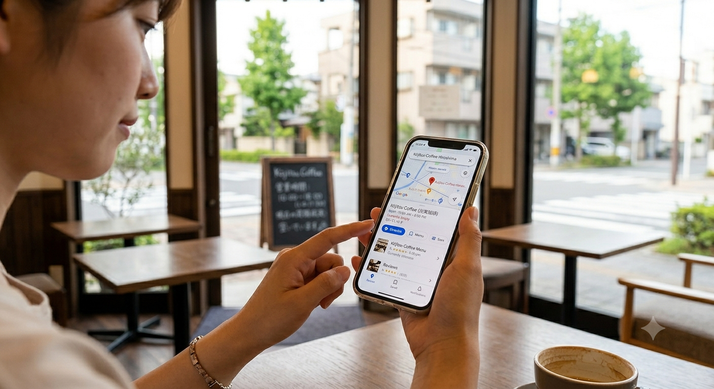
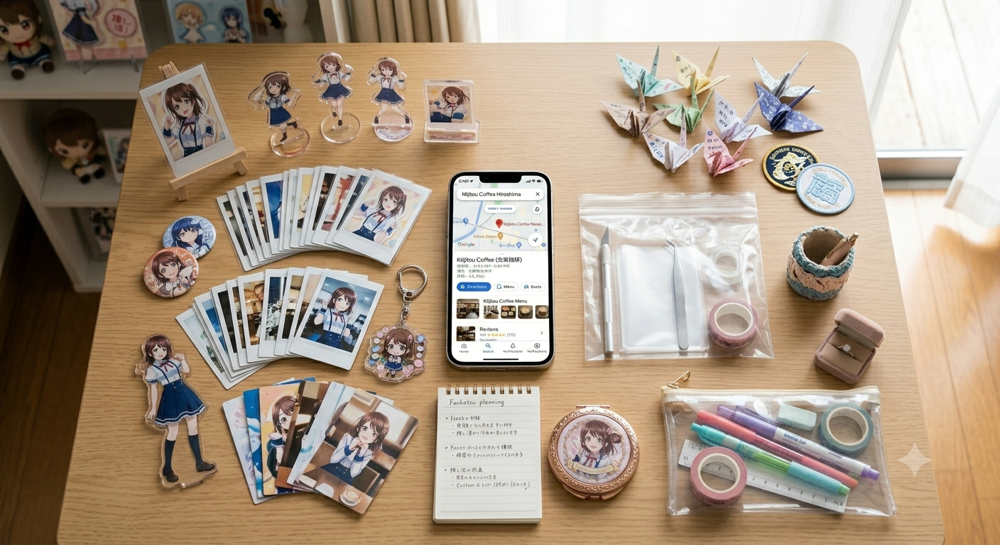
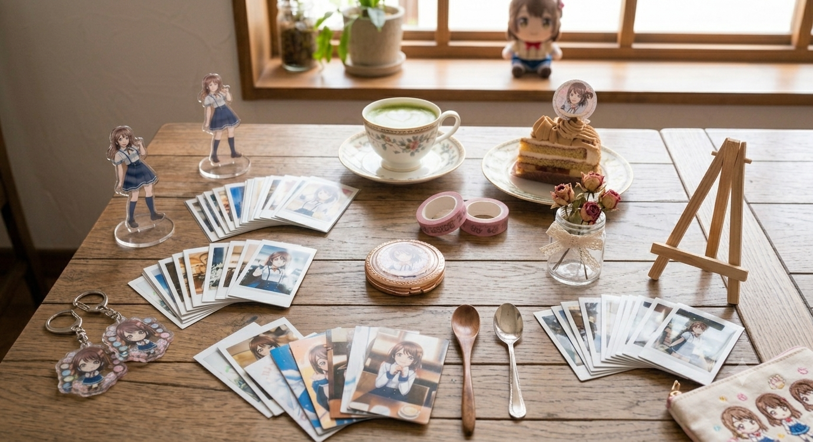

- トップ >
- 推し活利用ガイド
推し活利用ガイド
推し活カフェをもっと楽しく快適に利用するためのポイントを紹介します。
マナーについて
周りのお客様の迷惑にならないように撮影しましょう。
みんなが気持ちよく推し活できる空間づくりを大切にしましょう‼
事前準備をしてみよう

行きたいカフェの営業時間や混雑状況を事前にチェックしておくと安心です。
予約が必要なお店もあるので注意しましょう。
持っていくものを決めよう

- 推しのぬいぐるみ
- アクリルスタンド
- トレカ・公式写真
- うちわ・ペンライト
持ち物は多すぎると管理が大変なので、必要なものを厳選して持っていくのがおすすめです。
撮影

自然光が入る席や明るい場所を選ぶと、推しグッズやドリンクをきれいに撮影できます。
周りのお客様の迷惑にならないよう配慮しながら、写真撮影を楽しみましょう。